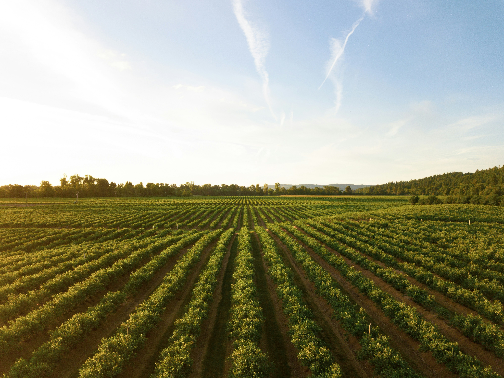
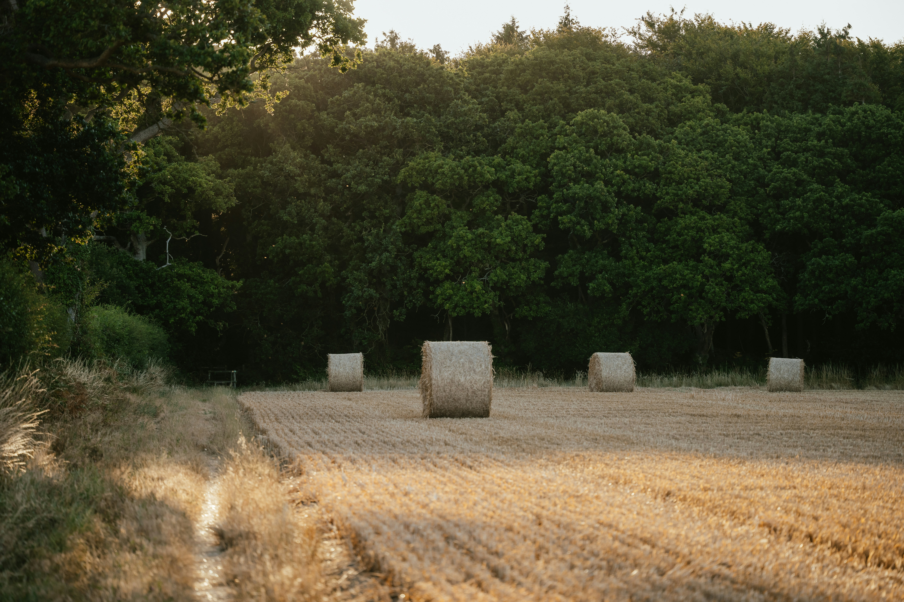
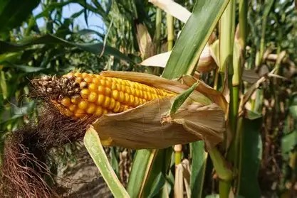
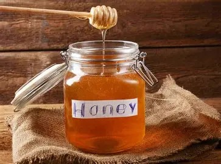
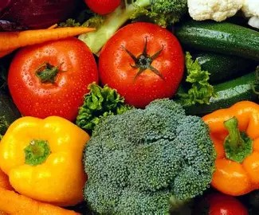

Reliable Supply
Agricultural products coordinated according to availability, quality requirements, and customer needs.
Reliable agriculture built around quality and consistency
Mooney Agrifarm supports buyers, businesses, and agricultural partners through responsible production, livestock supply, fresh produce, wholesale coordination, professional distribution, and reliable customer service.

Agricultural products coordinated according to availability, quality requirements, and customer needs.
Careful attention to product condition, handling, communication, and fulfillment expectations.
Professional coordination supporting delivery, collection, wholesale supply, and commercial orders.
Relationships built through integrity, dependable service, and shared commercial value.

About Mooney Agrifarm
Mooney Agrifarm is building a structured agricultural company focused on reliable supply, professional coordination, quality products, and lasting partnerships.
Agriculture is more than producing food or raising livestock. Successful supply requires planning, accurate information, dependable relationships, responsible handling, realistic commitments, and consistent communication.
Our objective is to strengthen every stage of the agricultural supply process so customers can work with a company that understands both product quality and operational reliability.
Discover our story →What we do
We support buyers and partners through multiple agricultural supply areas while maintaining clear expectations around availability, quantities, timing, and fulfillment.
Selected farm products supplied according to quality standards, production cycles, availability, and customer requirements.
Livestock and related agricultural products coordinated with attention to care, availability, handling, and customer needs.
Seasonal produce supplied based on harvest conditions, quality expectations, product availability, and order requirements.
Coordination helping agricultural products move efficiently between production, buyers, businesses, and approved delivery destinations.
Product and quantity planning for retailers, restaurants, distributors, institutions, and suitable commercial customers.
Long-term supply and business relationships built around communication, reliability, shared growth, and mutual value.
Featured products
Product availability depends on production, season, quality review, quantity requirements, and current supply conditions.

Grains01
Agricultural grain supplied for suitable food, feed, commercial, and wholesale requirements.
Product details →
Natural Products02
Naturally produced honey supplied according to availability, quality requirements, and order quantities.
Product details →
Fresh Produce03
Seasonal vegetables prepared for suitable household, hospitality, retail, and commercial supply needs.
Product details →Our process
Our structured process helps ensure requirements, availability, quantities, timing, and responsibilities are understood before supply begins.
The customer provides details about the product, estimated quantity, location, expected timing, and important specifications.
Our team reviews current production, seasonal conditions, supply availability, quality requirements, and operational capacity.
Product details, quantities, timing, responsibilities, fulfillment options, and commercial conditions are confirmed.
Products are reviewed and prepared according to the confirmed requirements and appropriate handling expectations.
Collection, distribution, delivery, or another approved fulfillment arrangement is coordinated with the customer.
Why Mooney Agrifarm
Buyers need more than attractive prices. They need dependable products, accurate communication, responsible handling, realistic commitments, and a supplier prepared to build lasting relationships.
Speak With Our TeamProduct condition and customer requirements receive careful attention before fulfillment.
Customers receive practical information about availability, quantities, timing, and next steps.
We aim to confirm only what can reasonably be supplied or coordinated.
We review wholesale, recurring, seasonal, and suitable customer-specific requirements.
Our goal is to create value beyond one transaction through dependable partnerships.
Every inquiry is approached with organization, accountability, and respect.
Who we serve
We work with customers whose needs align with our available products, quantities, timing, and operational capabilities.
Product and wholesale supply support for retail businesses.
Fresh produce and agricultural supply consideration for restaurants and food-service operations.
Bulk and recurring supply coordination for suitable wholesale customers.
Agricultural product and supply partnerships supporting wider distribution.
Supply consideration for eligible organizations and institutional requirements.
Product, sourcing, livestock, and commercial coordination with industry partners.
Inside Mooney Agrifarm
Responsible growth
Long-term agricultural success requires responsible use of resources, thoughtful production decisions, dependable relationships, efficient coordination, and systems that continue improving as the business grows.
Developing practical agricultural systems with attention to product quality and long-term value.
Encouraging thoughtful use of land, materials, time, and operational resources.
Improving planning and handling to reduce preventable product loss.
Building relationships that support customers, workers, suppliers, and agricultural communities.
Careers at Mooney Agrifarm
We consider qualified applicants for administrative, customer support, digital, technical, marketing, and operational opportunities based on current business requirements.
Build with Mooney Agrifarm
Contact our team to discuss available products, livestock, commercial quantities, wholesale supply, distribution, or partnership opportunities.